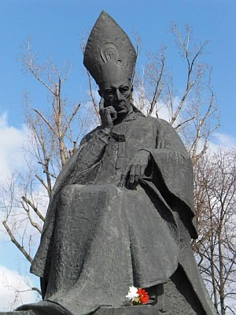

Upamiêtnienie

3 maja 1994 zosta³ po¶miertnie odznaczony Orderem Or³a Bia³ego. 25 pa¼dziernika 2000 w uznaniu jego zas³ug Sejm Rzeczypospolitej Polskiej og³osi³ rok 2001 Rokiem Kardyna³a Wyszyñskiego.
3 lipca 1993 kard. Józef Glemp erygowa³ Instytut Prymasowski Stefana Kardyna³a Wyszyñskiego, którego celem jest zabezpieczenie i upowszechnienie dziedzictwa Prymasa Tysi±clecia. W 1998 powo³ano Fundacjê "Dziedzictwo Stefana Kardyna³a Wyszyñskiego".
1 pa¼dziernika 1999 przekszta³cono warszawsk± Akademiê Teologii Katolickiej w Uniwersytet Kardyna³a Stefana Wyszyñskiego.
W 2000 na ekrany kin wszed³ polski film Prymas. Trzy lata z tysi±ca, opowiadaj±cy o uwiêzieniu Wyszyñskiego przez w³adze PRL, z Andrzejem Sewerynem w roli g³ównej. W 2009 powsta³ spektakl TVP Prymas w Komañczy w re¿yserii Paw³a Woldana z rol± g³ówn± Olgierda £ukaszewicza.
Obecnie w Polsce imiê Kardyna³a Stefana Wyszyñskiego nosz± liczne szko³y, szpitale, fundacje itp. instytucje powszechnie kojarzone ze s³u¿b± publiczn±.